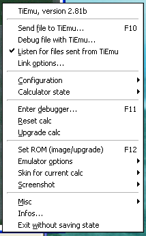
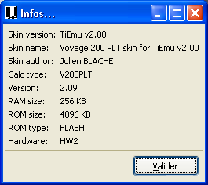

6. Popup menu
By clicking the right button menu anywhere on the main window, you gain
access to the functionnalities of the emulator. If you let your mouse
cursor on the item during some while, a tooltip will appear.
On iPAQ, you have to touch-point on the LCD region.
The menu
is organized as follow :

6.1 Link
The Send file to TiEmu item
will let you choose a file to load into the emulator while being on the
HOME screen. You can choose
one or several files at a time. You can drag and drop them from
anywhere to the TiEmu main windows, too.
The Debug file with TiEmu
item
will let you choose a file to debug using the emulator: First, the file
(which should be an uncompressed TIGCC program compiled with debugging
information) will be loaded into the emulator and a program entry
breakpoint will be set on it. You then need to run the program, passing
any arguments it requires. TiEmu will then intercept the launch, bypass
any OS execution protections (so you need not worry about these), open
the debugger and load the debugging information file (the .dbg file
corresponding to your program, and looked up in the same folder as your
program). It will also set a GDB breakpoint on the main function, so if
you don't need to debug the TIGCC startup code, just click "Continue"
in the Insight Source Window to get to the beginning of your main
function. You can choose only one file at a time; any data files
required by the program need to be sent separately using
Send file to TiEmu.
The Settings item opens a
dialog box. This is a large topic which is covered elsewhere. See the
corresponding
section...
The Quick send... item
is a convenient feature when testing program being under development.
It allows to specify a file to send whenever you press F10 or click the
Send file to TiEmu item.
When enabled, the dialog box displayed by Send file is completely by-passed.
The Listen for files item
lets
you
enable (checked) or disable (unchecked) the receiving of variables
from TiEmu. You should uncheck it if your program accesses the linkport
for sound.
Emulate Sound enable sound
emulation to speakers. Check it if your program accesses the linkport
for sound.
6.2 Configuration and State
You can save or load a particular configuration. A configuration
contains the current parameters of the emulator (emulator image to use,
size of the window, link cable type, ...). It does not contain any
information on the calculator state. The configuration is saved in the
tiemu.ini file. This is a text
file and its format is described in the command line section.
The calculator state can be saved, loaded or reverted (automatically
load the last previously saved state).
This can be done at any time. The revert option is useful to reload the
latest saved state.
The state is
saved in a file containing an image of the calculator content (UAE
structures of the m68k engine, I/O ports, RAM, RTC, FLASH, LCD address,
contrast, HW protection state, archive limit, ...) and of some
environmental variables (all breakpoints).
6.3 Debugger
This is a large topic which is covered elsewhere. See the corresponding
section...
Reset calc: this completely
resets the calculator by loading the RESET/SSP vectors and issuing a
reset of the processor. The linkport is reset, too. Other devices
(ASIC, RAM, FLASH, ...) are left un-touched.
This is not like you removed batteries
for a while.
Upgrade calc: allows you to
load a TI's OS FLASH upgrade into the calculator without needing to
send it. If you save the calculator state, TiEmu will remind the
upgrade and load it after image at startup.
6.4 Options
Set ROM version: lets you
choose an existing image from a list. If you want to add an image,
click the Import button to
convert a ROM dump or a FLASH upgrade into an image.
You can drag and drop a ROM dump or FLASH upgrade onto the TiEm main
window. The file will be automatically imported and you will get the
box below.
Note: TiEmu scans the images
folder whenever you run this box.
Misc options:
- restrict to actual speed:
if checked, TiEmu will run the hand-held at its nominal speed. Else, it
will run it at the maximum the CPU is capable of.
- HW protection: if checked,
the HW protection device is enabled and emulated. TiEmu needs to be
restarted (or an image to be loaded) for changes to take effect.
- normal view: display skin
and/or lcd with a 1x ratio,
- [Win32] large view: same
with 2x
ratio (note: this mode will use more CPU),
- [Linux] large view: same
with 2x
ratio (note: the skin may not be resized to 2x with some WM, it will be
resized to fit the screen),
- full screen: display LCD
only and make it fits the screen (currently disabled because it is
excessively CPU intensive under Win32).
Skin for current calc: none, default, other.
The first option lets you remove the skin to just display the LCD. In
this mode, you keep access to the right click menu but you have to use
the keyboard for TI keys:
The second option makes TiEmu fall back on the built-in skin.
The third option lets you choose a skin of your own. You can drag and
drop a skin file to the TiEmu main windows, too.
Note: the skin must be a TiEmu
compatible skin (see the Skin section) else it will be rejected.
6.5 Infos
Misc: gives you access to this
help and ManPage, ChangeLog, About.
Info: enumerates current
calculator information like this:

6.6 Exiting
Exit and save state: TiEmu
will save both state and configuration before exiting.
Exit without saving state:
TiEmu will exit without saving
state and configuration.